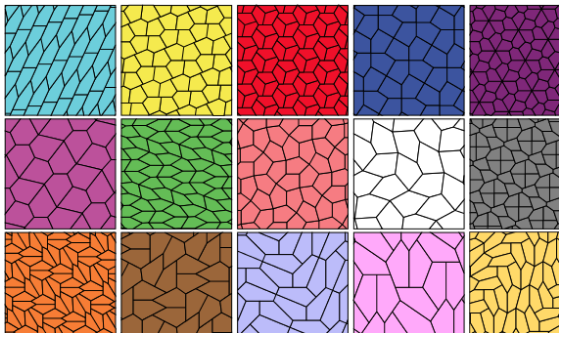
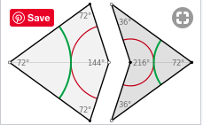
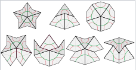

One of the oldest problems in geometry asks which shapes (or sets of shapes) can tile a plane, locking together with copies of themselves to cover a flat area in an endless pattern called a tessellation.
It's easy to see how squares, triangles, and hexagons are tiling shapes, but pentagons are much harder. It has recently been proven that there are only 15 pentagons (discovered between 1918 and 2015) that can do so.
In the 1970s, Roger Penrose discovered various series of tiles (related to pentagons in angle) that were APERIODIC. This means that you could lay these tile sets forever and the pattern would never repeat! One such set is the kite and dart, which we use here.
Martin Gardner wrote a really great booklet on Penrose tiles and you can read it for free here
Although Penrosy allows you to lay tiles however you like, making an actual Penrose tiling requires following some rules. You can't just put a kite into a dart like so to create a rhombus. Rhombuses tile periodically! Instead you have to line up the imaginary lines shown below.
It turns out there are only seven appropriate ways to lay the tiles when you follow this placement rule!>
